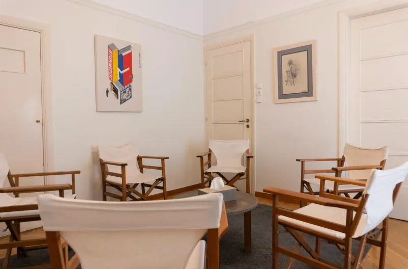

5 έτηεκπαίδευση στην ομαδική ανάλυση, μέλος του EGATIN
2021ιδιωτικό γραφείο από το
Θεραπεία
Ατομική και ομαδική ψυχοθεραπεία για ενήλικες
Κάθε άνθρωπος έρχεται με τη δική του ιστορία. Εδώ θα βρείτε με τι ασχολείται η Ελένη και με ποια προσέγγιση: δυαδική ψυχοθεραπεία ψυχαναλυτικού τύπου και ομαδική ανάλυση.
Δυαδική ψυχοθεραπεία ψυχαναλυτικού τύπου για ενήλικες. Στον σταθερό χρόνο της συνεδρίας μιλάτε ελεύθερα για ό,τι σας απασχολεί, και μαζί αναζητάμε τι κρύβεται πίσω από το σύμπτωμα: επαναλαμβανόμενα μοτίβα, παλιές εμπειρίες, τον τρόπο που σχετίζεστε με τους άλλους και με τον εαυτό σας. Δεν πρόκειται για γρήγορες συμβουλές, αλλά για μια σχέση εμπιστοσύνης μέσα στην οποία η αλλαγή γίνεται σταδιακά και ουσιαστικά. Οι συνεδρίες γίνονται στο γραφείο στα Ιλίσια ή μέσω βιντεοκλήσης.
Ενήλικες
Δια ζώσης & online
Ομαδική αναλυτική ψυχοθεραπεία
Συνεδρία 90 λεπτών
Μια μικρή ομάδα ανθρώπων συναντιέται τακτικά με τη συντονίστρια και μιλά ελεύθερα. Μέσα από τις σχέσεις που αναπτύσσονται στην ομάδα, φαίνεται καθαρά πώς σχετιζόμαστε και στη ζωή μας: τι επαναλαμβάνουμε, τι φοβόμαστε, τι μας κρατά πίσω. Η ομάδα δίνει ελπίδα, την αίσθηση ότι δεν είστε μόνοι στις δυσκολίες σας και τη χαρά να βοηθάτε κι εσείς τους άλλους. Η Ελένη έχει συντονίσει και συν-συντονίσει αναλυτικές ομάδες ψυχοθεραπείας από το 2021.
Μικρή ομάδα
Ιλίσια
Ομάδες γονέων
Συνάντηση 90 λεπτών
Ομάδες για γονείς που θέλουν να καταλάβουν καλύτερα το παιδί τους και τον δικό τους ρόλο. Η Ελένη έχει εργαστεί για χρόνια σε Κέντρα Ειδικών Θεραπειών, παρέχοντας συμβουλευτική σε γονείς παιδιών με δυσκολίες όπως η διαταραχή αυτιστικού φάσματος, η ΔΕΠΥ και άλλες αναπτυξιακές και ψυχολογικές δυσκολίες. Στην ομάδα οι γονείς μοιράζονται όσα ζουν, παίρνουν στήριξη από ανθρώπους που τους καταλαβαίνουν και βρίσκουν, με την καθοδήγηση της θεραπεύτριας, πιο ήρεμους τρόπους να διαχειρίζονται την καθημερινότητα.
Γονείς
ΔΕΠΥ · αυτισμός
Άγχος, κρίσεις πανικού & φοβίες
Συνεδρίες 45–50 λεπτών
Όταν το άγχος γίνεται μόνιμος σύντροφος, όταν μια κρίση πανικού σας κάνει να φοβάστε την επόμενη ή όταν μια φοβία περιορίζει όσα κάνετε, η ψυχοθεραπεία βοηθά να καταλάβετε από πού έρχονται αυτά τα συμπτώματα και τι προσπαθούν να σας πουν. Παράλληλα δουλεύουμε πρακτικά τη διαχείριση του άγχους και του στρες, ώστε η καθημερινότητα να γίνει ξανά πιο ελεύθερη. Υπάρχει και η δυνατότητα πιο σύντομων συνεδριών συμβουλευτικής, όταν αυτό ταιριάζει καλύτερα.
Άγχος & στρες
Πανικός
Φοβίες
Κατάθλιψη & σοβαρότερες δυσκολίες
Συνεδρία 50 λεπτών
Η Ελένη αναλαμβάνει ενήλικες που αντιμετωπίζουν κάθε είδους ψυχολογικές και ψυχιατρικές δυσκολίες: κατάθλιψη, διπολική διαταραχή, ιδεοψυχαναγκαστική διαταραχή, οριακή διαταραχή προσωπικότητας. Έχει κλινική εμπειρία από το Κέντρο Ημέρας της Εταιρείας Κοινωνικής Ψυχιατρικής Π. Σακελλαρόπουλος και από την Ψυχιατρική Κλινική του Νοσοκομείου Ρεθύμνου. Όταν κρίνεται απαραίτητο, συνεργάζεται με ψυχίατρο, ώστε να έχετε την καλύτερη δυνατή υποστήριξη.
Κατάθλιψη
Διπολική
ΙΨΔ
Οριακή
Σχέσεις, ζευγάρι & αυτοεκτίμηση
Συνεδρία 50 λεπτών
Πολλά από όσα μας πονούν γεννιούνται μέσα στις σχέσεις: με τον σύντροφο, την οικογένεια, τους φίλους, τη δουλειά. Στη θεραπεία εξετάζουμε τον τρόπο που δένεστε με τους άλλους, πώς βάζετε όρια και πώς βλέπετε τον εαυτό σας. Η Ελένη έχει κάνει externship στη θεραπεία ζεύγους με βάση τη Συγκινησιακά Εστιασμένη Θεραπεία (EFT). Δουλεύουμε επίσης την αυτοεκτίμηση και την αυτοεικόνα, καθώς και τα ψυχοσωματικά συμπτώματα, όταν το σώμα εκφράζει όσα δεν έχουν ειπωθεί.
Ζευγάρι
Αυτοεκτίμηση
Ψυχοσωματικά
Ομαδική ανάλυση
Τι συμβαίνει σε μια ομάδα;
Η ομαδική αναλυτική ψυχοθεραπεία είναι το πεδίο της Ελένης. Πατήστε τους τέσσερις τρόπους με τους οποίους βοηθά μια ομάδα και δείτε τον κύκλο να αλλάζει.

Η αίθουσα της ομάδας στο γραφείο: οι καρέκλες πάντα σε κύκλο.
Η Ελένη Μωρόγιαννη είναι ψυχολόγος – ψυχοθεραπεύτρια και διατηρεί ιδιωτικό γραφείο στα Ιλίσια. Είναι τελειόφοιτη της πενταετούς εκπαίδευσης στην ομαδική αναλυτική ψυχοθεραπεία στο Ελληνικό Δίκτυο Ομαδικών Αναλυτών, μέλος του EGATIN (European Group Analytic Training Network).
Σπούδασε Ψυχολογία στο Πανεπιστήμιο Κρήτης και έλαβε μεταπτυχιακό δίπλωμα στη Διοίκηση Ανθρώπινου Δυναμικού από το Οικονομικό Πανεπιστήμιο Αθηνών. Εργάζεται ιδιωτικά δια ζώσης και διαδικτυακά και συνεργάζεται με το Ινστιτούτο Ψυχοθεραπείας Αθηνών (ΙΨΥΑ).
Η κλινική της εμπειρία προέρχεται από το Κέντρο Ημέρας της Εταιρείας Κοινωνικής Ψυχιατρικής Π. Σακελλαρόπουλος, όπου για χρόνια συντόνιζε αναλυτική θεραπευτική ομάδα στο πλαίσιο εποπτευόμενης πρακτικής, από την Ψυχιατρική Κλινική του Γενικού Νοσοκομείου Ρεθύμνου και από Κέντρα Ειδικών Θεραπειών, όπου παρείχε συμβουλευτική σε γονείς και ψυχοθεραπεία σε εφήβους και ενήλικες.
Για εκείνη η ψυχοθεραπεία είναι ένα ταξίδι αυτογνωσίας, με στόχο τον επαναπροσδιορισμό του ατόμου μέσα στη ζωή του και τη θεραπευτική αλλαγή.
Σπουδές & εκπαίδευση
Εκπαίδευση στην ομαδική αναλυτική ψυχοθεραπεία, Ελληνικό Δίκτυο Ομαδικών Αναλυτών (EGATIN)
Externship στη θεραπεία ζεύγους, Συγκινησιακά Εστιασμένη Θεραπεία (EFT)
MSc Διοίκηση Ανθρώπινου Δυναμικού, Οικονομικό Πανεπιστήμιο Αθηνών
BSc Ψυχολογία, Πανεπιστήμιο Κρήτης
Κλινική εμπειρία
Ψυχολόγος – ψυχοθεραπεύτρια, ιδιωτικό γραφείο, Αθήνα
Συντονίστρια αναλυτικής ομάδας ψυχοθεραπείας, Κέντρο Ημέρας Εταιρείας Κοινωνικής Ψυχιατρικής Π. Σακελλαρόπουλος
Ψυχολόγος – ψυχοθεραπεύτρια, Κέντρο Ειδικών Θεραπειών, Περιστέρι
Συν-συντονίστρια αναλυτικής ομάδας ψυχοθεραπείας, Ελληνικό Δίκτυο Ομαδικών Αναλυτών
Έχει παρουσιάσει εργασίες για θέματα ψυχοθεραπείας και ψυχοπαθολογίας στο 30ό (Θεσσαλονίκη, 2022) και στο 32ο (Καλαμάτα, 2024) Πανελλήνιο Συνέδριο Ψυχιατρικής και στο 2ο Συνέδριο Ψυχοθεραπείας (Αθήνα, 2024).
Ο χώρος
Ένα φωτεινό γραφείο στα Ιλίσια
Ψαροκόκαλο, φυσικό φως, βιβλία και λίγα πράγματα που κάνουν το δωμάτιο έναν χώρο για να πάρετε μια ανάσα.
Το γραφείο ψυχοθεραπείας στα Ιλίσια με την πολυθρόνα δίπλα στο παράθυροΟ τοίχος του γραφείου με τα πτυχία και δύο πίνακεςΛεβάντα σε μπλε κεραμικό βάζο στο ράφι του γραφείουΤο γραφείο με το φως από το μεγάλο παράθυροΒιβλία ψυχολογίας και ψυχανάλυσης στη βιβλιοθήκηΧώρος συνεδριών με ξύλινο γραφείο και διπλή πόρταΗ κάρτα της Ελένης Μωρόγιαννη και το φωτιστικό στο γραφείο
Ενιωσα εμπιστοσύνη και ασφάλεια, με καθοδήγησε μεσα στην ομάδα ενσυναισθηση και κατανόηση!
10/10
Ένιωσα τεράστια ασφάλεια και εμπιστοσύνη. Με βοήθησε να σκάψω και να εξερευνήσω τον εαυτό μου.
10/10
Η ομαδική ψυχοθεραπέια μπήκε στη ζωή μου πριν από 3 χρόνια. Μέσα στην ομάδα γνώρισα την Ελένη σαν συντονίστρια. Με την προσωπικότητά της, την ψυχραιμία της και τις γνώσεις πάνω στο αντικέιμενο, με έχει βοηθήσει να καταλάβω τον εαυτό μου καλύτερα, να θέτω τα δικά μου όρια και να εκφράζω τα συναισθήματα μου.
10/10
Εξαιρετική συντονίστρια ψυχοθεραπευτικής ομάδας, πολύπλευρη και ουσιαστική! Μου ενέπνευσε εμπιστοσύνη γρήγορα και νιώθω ευγνώμων που ξεκίνησα αυτή τη συνεργασία/ταξίδι.
9/10
Η Ελένη είναι σοβαρή επαγγελματίας με στάση κατανόησης και δίνοντας χώρο και χρόνο στα πράγματα με έκανε να την εμπιστευτώ και να αισθανθώ ασφάλεια στα θέματα που φέρνω στα πλαίσια της θεραπείας μου. Δείχνει ψυχραιμία και φέρει ισορροπία με όσα ανοίγονται στην ψυχανάλυση.
9,8/10
Σοβαρη επαγγελματίας με λεπτό χειρισμό και συνέπεια!
10/10
Από την πρώτη κιόλας στιγμή ένιωσα μεγάλη οικειότητα και ασφάλεια. Έχει την ξεχωριστή ικανότητα να συνδέεται άμεσα μαζί μου και να αντιλαμβάνεται το συναίσθημα μου πριν καν το εκφράσω πλήρως. Σε κάθε μας συνεδρία νιώθω ότι με κατανοεί βαθιά και μου ανοίγει νέες οπτικές που με βοηθούν ουσιαστικά. Παράλληλα, είναι μια εξαιρετική συντονίστρια στην ομάδα ψυχοθεραπείας, διατηρώντας πάντα τις ισορροπίες και δημιουργώντας ένα κλίμα εμπιστοσύνης. Είμαι πολύ χαρούμενη για τη συνεργασία μας όλο αυτό το διάστημα και τη συστήνω ανεπιφύλακτα!
10/10
Την συστήνω ανεπιφύλακτα . Με έχει βοηθήσει πολύ να βρω νέους τρόπους αντιμετώπισης των θεμάτων μου και αισθάνομαι πλέον περισσότερο δυνατή και αισιόδοξη για το μέλλον. Αξίζει να σημειώσω πως στο παρελθόν είχα απευθυνθεί και σε άλλους ειδικούς χωρίς αποτέλεσμα. Τώρα είμαι σε ομαδική ψυχοθεραπεία και αισθάνομαι ευγνώμων παρά τις αρχικές επιφυλάξεις μου.
10/10
Εξαιρετική από την πρώτη συνεδρία.
10/10
Άψογη επαγγελματίας με ενσυναίσθηση και γνώση του αντικειμένου. Με έκανε από την αρχή να νιώσω πολύ άνετα και να ανοιχτώ.. Τη συνιστώ ανεπιφύλακτα, προσωπικά με έχει βοηθήσει πολυ!
Ερωτήσεις
Πριν από την πρώτη συνεδρία
Δεν βρίσκετε την ερώτησή σας; Καλέστε στο 210 744 5117 και ρωτήστε.
Πώς κλείνω ραντεβού;
Μπορείτε να κλείσετε ραντεβού online μέσα από το doctoranytime, όπου βλέπετε τις διαθέσιμες ώρες, ή να καλέσετε στο 210 744 5117. Στο πρώτο ραντεβού γνωριζόμαστε, μιλάμε για ό,τι σας φέρνει και αποφασίζουμε μαζί ποια μορφή θεραπείας σας ταιριάζει.
Γίνονται συνεδρίες online;
Ναι. Οι συνεδρίες γίνονται είτε δια ζώσης στο γραφείο στα Ιλίσια είτε μέσω βιντεοκλήσης. Η online συνεδρία έχει την ίδια διάρκεια και το ίδιο θεραπευτικό πλαίσιο και είναι ιδανική αν μένετε μακριά, ταξιδεύετε συχνά ή έχετε δύσκολο πρόγραμμα.
Πόσο διαρκεί μια συνεδρία;
Η ατομική ψυχοθεραπεία διαρκεί 50 λεπτά. Η ομαδική αναλυτική ψυχοθεραπεία και οι ομάδες γονέων διαρκούν 90 λεπτά. Οι συνεδρίες συμβουλευτικής για τη διαχείριση του άγχους, του στρες ή της κατάθλιψης είναι 45 λεπτά.
Τι είναι η ομαδική αναλυτική ψυχοθεραπεία;
Είναι μια μορφή ψυχοθεραπείας όπου μια μικρή ομάδα ανθρώπων συναντιέται τακτικά με τη συντονίστρια και μιλά ελεύθερα. Οι σχέσεις που αναπτύσσονται μέσα στην ομάδα δείχνουν πώς σχετιζόμαστε και στη ζωή μας. Η ομάδα δίνει ελπίδα, την αίσθηση ότι δεν είμαστε μόνοι και τη δυνατότητα να βοηθάμε κι εμείς τους άλλους.
Ατομική ή ομαδική θεραπεία: πώς διαλέγω;
Δεν χρειάζεται να το αποφασίσετε μόνοι σας. Στις πρώτες συναντήσεις συζητάμε τι σας απασχολεί και τι αναζητάτε, και προτείνεται η μορφή που σας ταιριάζει. Πολλοί ξεκινούν με ατομική ψυχοθεραπεία, ενώ η ομάδα βοηθά ιδιαίτερα όταν οι δυσκολίες αφορούν τις σχέσεις με τους άλλους.
Συνεργάζεστε με ψυχίατρο;
Ναι, όταν κρίνεται απαραίτητο. Σε δυσκολίες όπως η διπολική διαταραχή, η βαριά κατάθλιψη ή η ιδεοψυχαναγκαστική διαταραχή, η συνεργασία ψυχολόγου και ψυχιάτρου δίνει την καλύτερη δυνατή υποστήριξη στον θεραπευόμενο.
Υπάρχει μειωμένη τιμή για φοιτητές ή ανέργους;
Ναι. Υπάρχει ειδικό κόστος επίσκεψης για φοιτητές, ανέργους και άτομα με αναπηρία (ΑΜΕΑ). Ρωτήστε μας στο τηλέφωνο ή δείτε τις ενδεικτικές τιμές στο doctoranytime πριν κλείσετε το ραντεβού σας.
Πώς πληρώνω και τι γίνεται αν χρειαστεί να ακυρώσω;
Η πληρωμή γίνεται με κάρτα ή μετρητά στο γραφείο, ή online κατά την κράτηση στο doctoranytime. Μπορείτε να ακυρώσετε το ραντεβού σας χωρίς χρέωση έως 24 ώρες πριν· αν είχατε πληρώσει online, τα χρήματα επιστρέφονται.
Κάνετε συνεδρίες στα αγγλικά;
Ναι. Η Ελένη μιλά ελληνικά και αγγλικά, οπότε η ψυχοθεραπεία μπορεί να γίνει και στα αγγλικά, δια ζώσης στα Ιλίσια ή online.
Με το μετρό: ο σταθμός Μέγαρο Μουσικής (γραμμή 3) απέχει περίπου 230 μ. και ο Ευαγγελισμός περίπου 470 μ. Με λεωφορείο: η στάση «Ιλίσια» είναι περίπου 110 μ. μακριά. Με αυτοκίνητο: υπάρχει ιδιωτικό parking (Μέγαρο Μέξη) περίπου 50 μ. από το γραφείο. Οι συνεδρίες γίνονται κατόπιν ραντεβού, δια ζώσης ή με βιντεοκλήση.